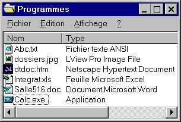

Document et fichier
Un document est une sorte de fichier.
- Fichier
Il est créé par une application et rangé sur un disque. C'est un item de base qui permet à l'ordinateur de distinguer les informations entre elles.

Un fichier peut tout aussi bien contenir des codes binaires lisibles seulement par l'ordinateur que des textes et images. Ainsi, les cinq premiers fichiers sont considérés comme des documents tandis que le fichier Calc.exe est un programme exécutable qui contient des codes illisibles destinés à l'ordinateur.
Document
Tiré du jargon de la bureautique, ce mot fait référence à un fichier contenant de l'information qui peut être lue directement ou à l'aide d'une application.
Par exemple, le fichier Abc.txt est lisible directement, tandis que le fichier Integrat.xls demande le logiciel Microsoft Excel pour sa lecture et son exploitation.
Un document est donc toujours un fichier tandis que le mot fichier représente un concept plus englobant tiré du jargon de l'informatique.
Habituellement, on regroupe documents et fichiers dans des dossiers ou répertoires.
Voir la rubrique Texte pour de l'information supplémentaire.